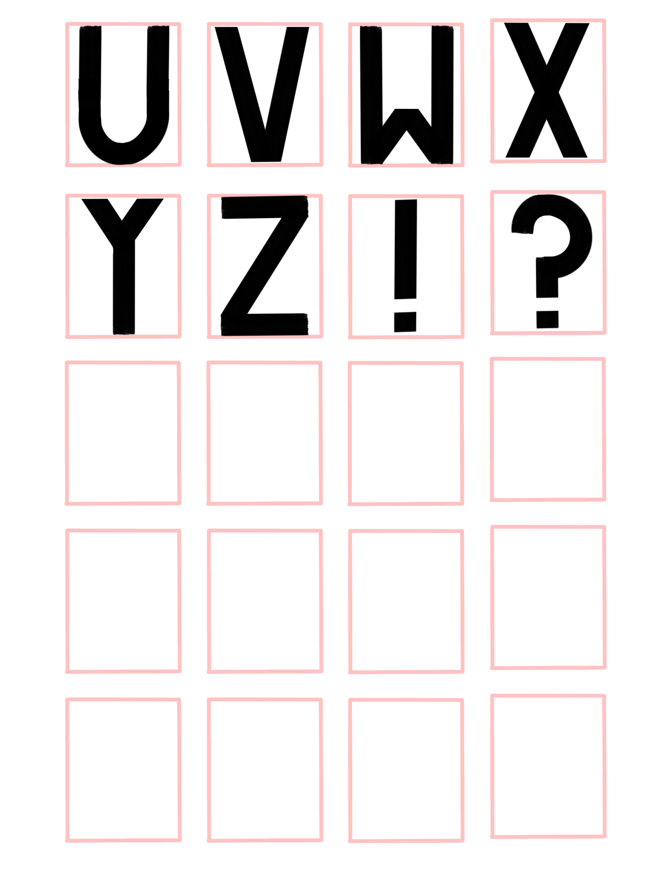
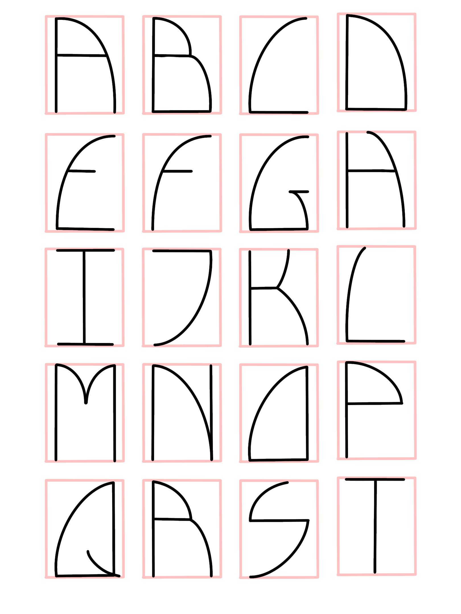
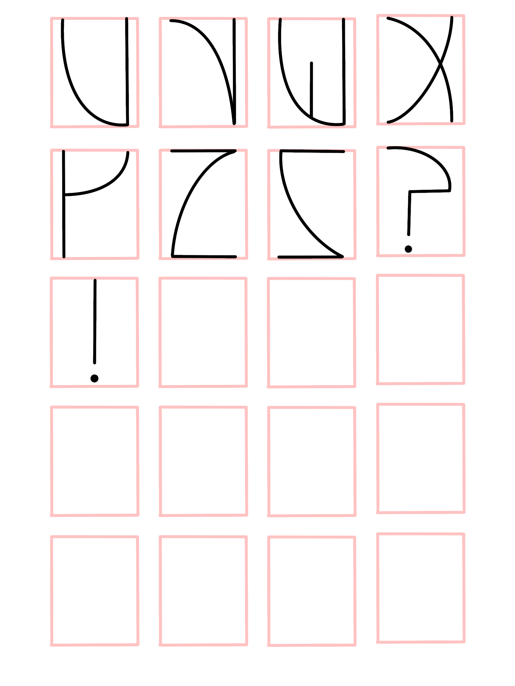
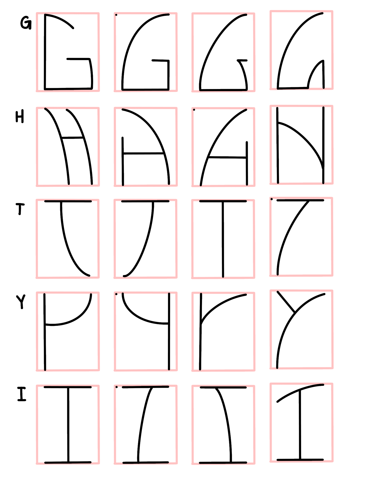
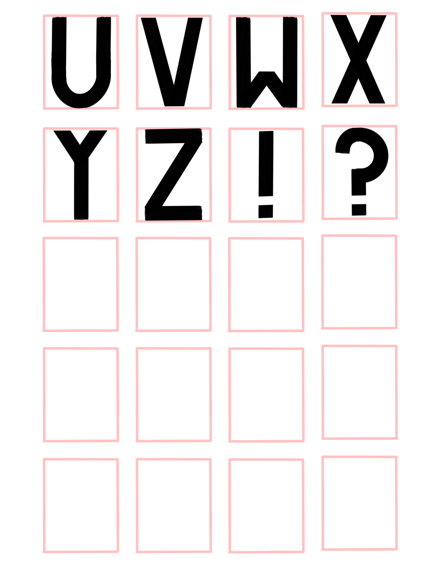
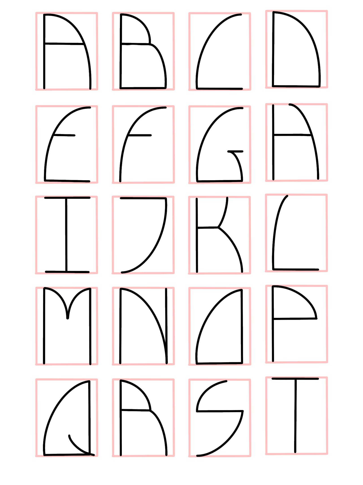
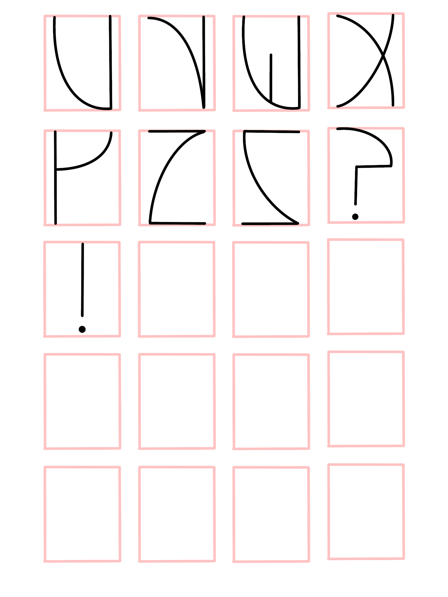
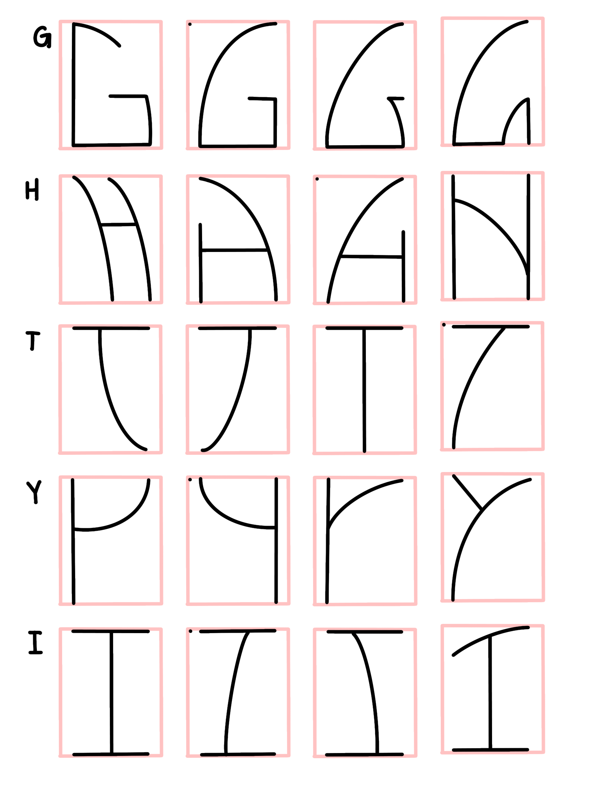
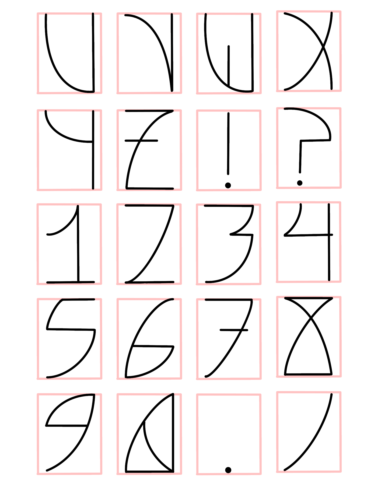
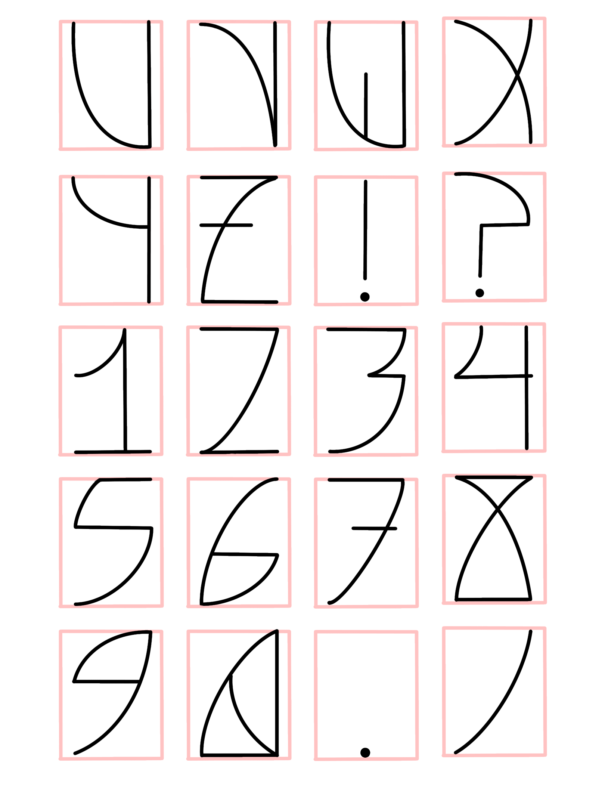

Typeface Process
Joseph Caiado 05/2022
1. Research
My first steps in approaching this project for myself required a better understanding of existing fonts that artists have already created and have hosted on foundries and other art-sharing platforms such as Dafont. I have used Dafont in the past for personal projects and thus my research started here for my own lack of resources around typography. The fonts in the images below were some that I found aesthetically pleasing, and thus were my initial source of inspiration. Another subconsious inspiration for my typeface comes from Pokemon, and is the Pokemon unknown. Unknown come in 28 variations, which consist of the alphabet [a through z] as well as an exclamation point and question mark. I find the way how Game Freak made simple mono-width lines into abstract forms with a dot for an eye to create both an alphabet and a Pokemon with such variation.
2. Sketching/Prototyping
Before attemping to code anything, I wanted to create a font that [a] I found aesthetically pleasing, and [b] that was within my skill range given the time alloted for the project. Using my research, I created two typefaces that I found pleasing for their own reasons. The first on the left drawing inspiration from the found fonts, as well as the font used in the online puzzle game 'Chuzzle,' which have a groovy, disco style to them. The second font on the right draws more inspiration from the unknown in Pokemon, though I wanted to focus on more repeating simplistic forms than those used by Game Freak in their unknown. The parameters I set for myself when creating the font were to use only one curve where possible and also keeping all horizontal lines straight. I ran into some difficulties with a few letters, namely G, H, I, and T, all which contain perpendicular connections between lines, whcih is not ideal within my typeface. Although through input from peers during critique and loosening my own parameters, I was able to create solutions to make all my letters look more cohesive.
 







3. Creating the Typeface with code
Before finalizing my decision on which font to continue forwards with for the project, I created a quick mock-up of a few letters in each typeface to give myself an idea of how the forms would be made and to give peers a better understanding of what a final product would look like. Quite quickly into coding the two typefaces, there was a very noticeable difference in the amount of effort, time and consistency in the typefaces. For example, it may not be noticeable from the presented image, but the typeface on the top of the first image has no consistency to line weight and all measurements were made based on my own perceptions and fiddling with numbers. Whereas the font on the bottom, and in the images on the right side I knew were all consistent lineweight, which was something I knew I wanted to have for my final typeface. Taking peer crtitique alongside these factors into consideration, my final decision was to focus on the thinner, more abstracted typeface that I knew I would be able to create a consistent and effective display typeface.
 

4. The Final Project
The project is finished already, and you should go view it by clicking here